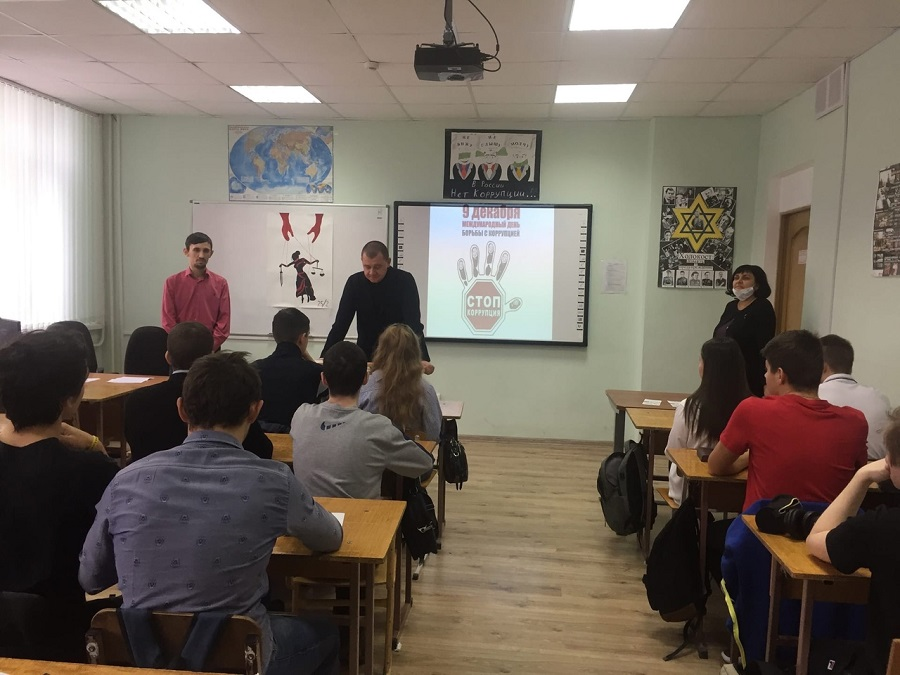

9 декабря 2020 года в колледже проведено профилактическое антикоррупционное мероприятие"Знай права! Противодействуй коррупции!". Мероприятие проведено при участии начальника службы безопасности колледжа Гайнарова С. Н. , преподавателя истории Глаголева А. Р., социального педагога и педагога-психолога колледжа. Коррупция - негативное явление, которое подрывает устои общества, создает угрозу развитию, способствует падению доверия к государственным органам, разрушает экономику, нравственность общества. Коррупция сегодня является одной из самых актуальных проблем. "Коррупция во всех своих проявлениях - главный враг нашего общества. Обучающиеся ознакомились с историей возникновения коррупции и методами борьбы с коррупцией в России. До сведения собравшихся Сергей Николаевич довел все права и обязанности по противодействию с коррупцией. Обучающимся был продемонстрирован фильм по противодействию коррупции. Все присутствующие принимали активное участие в обсуждении поставленных вопросов, высказывали своё отношение к проблеме коррупции
В завершении мероприятия собравшиеся сделали вывод: Коррупция - препятствие к экономическому росту и развитию, она ставит под угрозу любые преобразования. Прежде всего, нужно начать с самого себя и требовать устранения коррупционных проявлений от окружающих. Эффективность борьбы зависит от взаимодействия всех ветвей власти, их ответственности за процесс оздоровления общества.
Обучающимся раздали флаеры "Знай права! Противодействуй коррупции.!" С обучающимися проведено социологическое исследование, посвящённое отношению к проблемам коррупции. Библиотекарь колледжа Барыкина Г. Н. организовала выставку литературы " Нет коррупции" и выставку стенных газет антикоррупционной направленности " Надо жить честно!"
4 декабря 2020г. на официальном веб-сайте ВСЕРОССИЙСКОГО ИЗДАНИЯ "Альманах педагога" была опубликована научная статья "Изменение логотипа - новая форма собственности?" написанная студентами специальности: 38.02.07 "Банковское дело" 35 - Будаевой Викторией 25-ту - Гутеневой Ксенией
Руководитель Шереметьева Л.Е.
3 декабря в России отмечается день Неизвестного Солдата. Этот праздник призван увековечить память, воинскую доблесть и бессмертный подвиг погибших в боевых действиях российских и советских воинов, чьи имена остались неизвестными.
В библиотеке колледжа проведена тематическая выставка книг и наглядной агитации "Защита Родины-долг перед Отечеством". В целях сохранения исторической памяти и в ознаменовании 75-летия Победы в Великой Отечественной войне1941-1945 годов, в день Неизвестного Солдата обучающиеся колледжа приняли участие в международной акции "Тест по истории Великой Отечественной войны". К мемориальным доскам выпускников колледжа, погибших в мирное время при исполнении воинского долга Алевцева В.В. и Черненко А. В., Студенческий совет и волонтёры колледжа возложили живые цвета.
Отмечая эту дату, мы отдаем дань памяти и глубокого уважения воинам, павшим на фронтах Великой Отечественной войны. Наш долг – воссоздать историю подвига воинов Великой Отечественной войны, не позволить её переписать. Мы будем вечно помнить тех, кому обязаны мирной жизни.
УЧАСТИЕ СТУДЕНТОВ КОЛЛЕДЖА
В МЕЖДУНАРОДНОЙ АКЦИИ
«ТЕСТ ПО ИСТОРИИ ВЕЛИКОЙ ОТЕЧЕСТВЕННОЙ ВОЙНЫ»
(INTERNATIONAL ACTION «HISTORY TEST OF THE VICTORY OVER FASCISM»)
МЕЖДУНАРОДНОГО ПРОЕКТА «БОЛЬШАЯ ИСТОРИЯ»
В целях сохранения исторической памяти и в ознаменование 75-летия Победы в Великой Отечественной войне Указом Президента РФ 2020 год объявлен Годом памяти и славы. Наша задача сегодня – популяризация ведущей роли советского народа в победе во Второй Мировой войне и получение объективной информации об уровне исторической грамотности студентов в области истории Великой Отечественной войны.
Для привлечения внимания молодого поколения к подвигу советского солдата в освобождении мира от фашизма на сайте Теста зарегистрирована площадка ГБПОУ «Ставропольский региональный колледж вычислительной техники и электроники». Мероприятие проходит в рамках проекта «Большая история», который реализует Молодежный парламент при Государственной Думе Российской Федерации и Молодежный парламент при Думе Ставропольского края. С целью распространения исторических знаний о Великой Отечественной войне более 50 студентов 1 курса колледжа участвуют в написании теста в День Неизвестного солдата 3 декабря 2020 года в формате-онлайн. Участникам акции предложена возможность посмотреть видеофильм «Неизвестный Солдат», подготовленный Молодежным парламентом при Государственной Думе. Каждый участник Теста получает индивидуальный Сертификат, подписанный председателем Молодежного парламента при Государственной Думе Российской Федерации.

1 декабря в колледже проведены мероприятия, посвященные Всемирному Дню борьбы со СПИДом. Цель мероприятий - пропаганда здорового и безопасного образа жизни. В процессе проведения мероприятий решались следующие задачи:
- информирование подростков и молодежи о ситуации со СПИДом, привлечение внимания общественности к проблемам ВИЧ-инфицированных людей;
- привитие обучающимся навыков здорового образа жизни;
- формирование общественного сознания и гражданской позиции подростков и молодежи в области обеспечения безопасности от ВИЧ-инфекции и СПИДа.
В учебных группах проведены: дистанционное анкетирование на тему "Оценка уровня отношений обучающихся к проблемам ВИЧ-инфицированным", проведены онлайн классные часы и информационные беседы с показом видеофильмов. Педагогами колледжа проведены уроки, на которых была затронуты проблемы СПИДа в современном обществе.
Красная лента - это символ солидарности с теми, кого эпидемия СПИДа затронула лично: с людьми, живущими с ВИЧ-инфекцией и СПИДом, с их близкими, родными и друзьями. Волонтеры колледжа совместно со Студенческим советом провели акцию "Мы выбираем жизнь!", приуроченную Дню борьбы СПИДом.